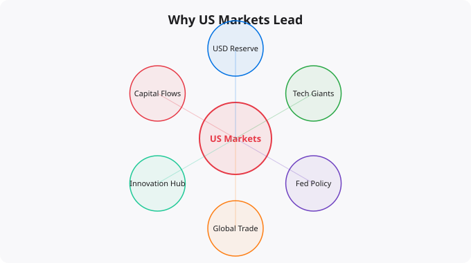

Every morning when Indian traders settle in front of their screens before the NSE opens, the first thing many of them check is what happened overnight in the US markets. If the Dow Jones fell 2% overnight, Indian markets are likely to open lower. If US earnings season delivers strong results, positive sentiment can lift markets around the world. This dependence is not accidental — it reflects structural realities about the size, influence, and interconnections of the American financial system. Understanding why the US market moves the world is essential knowledge for any globally-aware investor.
The US stock market represents approximately 40-45% of total global stock market capitalization. This means that nearly half of all the publicly listed equity value in the world is traded on American exchanges. No other single country comes close to this share. China is second at roughly 10-12%, and Japan, the UK, and France each represent much smaller shares.
When you have nearly half the world's equity value in one market, the sentiment and direction of that market creates gravitational effects on everything else. International investors — pension funds, sovereign wealth funds, mutual funds — hold significant portions of their portfolios in US equities. When those investors need to raise cash, reduce risk, or rebalance their portfolios, the decision affects markets everywhere. When US equity markets fall sharply, institutional investors around the world are simultaneously less wealthy, potentially triggering deleveraging and asset sales in all markets.
The US Dollar is the world's primary reserve currency — the currency that countries hold in their foreign exchange reserves, that international commodity markets price in, and that is used to settle most global trade and financial transactions. This reserve status gives the US extraordinary financial influence. When the Federal Reserve raises or lowers interest rates, it affects the global cost of Dollar-denominated borrowing. When the Dollar strengthens, it creates financial pressure for countries that have borrowed in Dollars but earn revenues in local currencies. When the Dollar weakens, it makes US exports more competitive and international investments more attractive in Dollar terms.
For India specifically, the Rupee-Dollar exchange rate affects everything from oil import costs (crude oil is priced in Dollars) to the returns of international investments to the competitiveness of Indian IT exports (which are priced in Dollars).
American companies dominate global technology, media, pharmaceutical, and financial sectors. Apple, Microsoft, Amazon, Google, Meta — these companies operate in essentially every country in the world. Their financial results reflect not just the US economy but global demand for technology products, digital advertising, cloud services, and consumer electronics. When these companies report earnings, they are reporting on the state of global digital commerce and technology adoption, which affects businesses and investors everywhere.
Many of the world's largest technology supply chains are deeply integrated with American companies. Taiwanese chip manufacturers, South Korean component suppliers, Indian software developers, and Chinese assembly operations all depend on the health of the American technology sector's demand. Economic shifts in the US technology sector ripple through this entire global ecosystem.
Modern financial markets are deeply interconnected through derivatives, cross-listings, currency markets, and the operations of multinational financial institutions. American banks and investment firms operate in virtually every major financial market in the world. When risk appetite changes in the US — typically measured by instruments like the VIX volatility index — it affects the behavior of these institutions globally, influencing lending, trading, and investment decisions everywhere they operate.
Emerging market currencies and equity markets are particularly sensitive to US financial conditions. When US interest rates rise, capital tends to flow back toward US assets from emerging markets, creating currency depreciation and market pressures in countries like India, Brazil, and South Africa. This dynamic — sometimes called the dollar milkshake theory or more formally discussed as the global financial cycle — is one of the key mechanisms through which US financial policy affects the rest of the world.
The Federal Reserve's monetary policy decisions are arguably the most watched economic events in the world. Every Fed meeting, every press conference by the Fed Chair, every release of FOMC meeting minutes moves global markets. This global influence reflects the Dollar's reserve status and the depth and breadth of US financial markets. When the Fed raised interest rates aggressively in 2022-2023 to combat inflation, it triggered capital outflows from emerging markets, currency depreciations, and economic stress in countries around the world — even though their own inflation and economic conditions were different from the US.
For Indian investors, understanding US market dynamics is not optional even if you only invest in Indian assets. US economic conditions affect global commodity prices (which affect India's inflation and trade balance), FII (Foreign Institutional Investor) flows into Indian markets (which affect liquidity and valuations), and the Rupee-Dollar exchange rate (which affects import costs and international competitiveness). Monitoring broad US economic trends — the direction of interest rates, the health of the corporate sector, the trajectory of inflation — is a core part of informed Indian market participation. You do not need to be a US market expert, but you need to understand the basic dynamics and how they transmit to India.
← Back to BlogFinancial education is only valuable if it changes behavior. The concepts covered here — whether about market mechanics, investment principles, or economic systems — are most useful when they become part of your decision-making framework rather than abstract knowledge that exists separately from your actions. The most important application is self-awareness: understanding why you are tempted to make certain financial decisions, recognizing when emotion is driving a choice that analysis should drive, and building systems (automatic investments, pre-committed rules for buying and selling) that protect you from your own worst instincts under pressure. Good financial decisions compound just as good investments do.
Reading about markets is not investing. Understanding market theory is not making money. The gap between knowledge and results in investing is filled by the practice of forming independent views, testing them against reality, and updating your thinking when evidence contradicts your expectations.
Developing a genuine market view requires: choosing 2-3 indicators to follow consistently rather than tracking dozens superficially, reading primary sources (earnings reports, central bank statements, economic data releases) rather than just media commentary, maintaining an investment journal where you record your reasoning when making decisions, and reviewing that reasoning 6-12 months later to understand where your thinking was right or wrong.
Weekly routine (30 minutes):
Monday: Review portfolio performance vs benchmark
Tuesday: Read one company annual report (if stock investor)
Wednesday: Check economic calendar for key data releases
Thursday: Review Fed/RBI communications from that week
Friday: Journal -- what happened this week vs expectations?
Monthly routine (2 hours):
Review asset allocation vs targets
Rebalance if any asset class drifted more than 5%
Read one investment book chapter or whitepaper
Review all open positions and thesis validity
Quarterly routine (4 hours):
Portfolio review: what worked, what did not, why?
Tax optimization check
Update financial goals
Read one earnings season summary for key companiesMarkets in liquid, public securities are highly efficient at incorporating publicly available information. Reading the same Bloomberg article, watching the same CNBC segment, and following the same analysts as millions of other investors does not give you an informational edge. By the time you read it, the market has likely already priced it in.
Where individual investors can have a genuine edge: patience (most institutional investors face quarterly performance pressure that prevents holding through temporary weakness), sector expertise (knowing an industry deeply as a practitioner gives real insight), tax efficiency (individual investors can optimise for after-tax returns in ways institutions cannot), and behavior (simply not panic selling during drawdowns outperforms most active strategies).
Beginners think about investing as picking the stocks that will go up the most. Experienced investors think about risk management first -- ensuring that mistakes do not destroy the portfolio's ability to recover and compound. The most important risk management principles: never invest money you will need within 5 years, diversify across asset classes and geographies, avoid leverage (borrowed money amplifies both gains and losses), and size positions so that being completely wrong on any single investment does not materially damage the portfolio.
Standard financial planning guidance: build a 3-6 month emergency fund first. Then invest 10-20% of gross income, increasing toward 20%+ as income grows. For aggressive wealth building, aim for a 30-40% savings rate. Invest consistently regardless of market conditions -- time in the market beats timing the market.
Investing is deploying capital for long periods (years to decades) based on fundamental value creation. Trading is buying and selling over shorter timeframes based on price movements. Most retail investors who attempt trading underperform a simple index fund. Investing in low-cost index funds consistently outperforms most active strategies over 10+ year periods.
Start with NIFTY 50 or NIFTY 500 index funds via SIP (Systematic Investment Plan) through any major AMC or broker. Index funds provide diversification, low costs, and performance that matches the market. Add direct equity only after you have at least 6-12 months of investing experience and genuine time to research individual companies.
Yes. India is one of the fastest-growing tech markets globally. These skills are in high demand across startups, MNCs, and product companies in Bangalore, Hyderabad, Pune, and Mumbai.
Follow official documentation, tech blogs from practitioners, GitHub repositories, and communities like Dev.to, Hashnode, and Reddit. Avoid news that creates urgency without substance.
Official documentation first. Then practical tutorials. Then build real projects. SRJahir Tech articles are written from real production experience — bookmark the series that matches your learning goal.
Consistent daily practice for 3-6 months produces real, usable skills. The key is building projects, not just reading. Every article on SRJahir Tech includes practical examples you can implement today.
Yes. All articles on SRJahir Tech are completely free. No paywalls, no subscriptions. Quality technical education should be accessible to everyone, especially aspiring engineers in India.